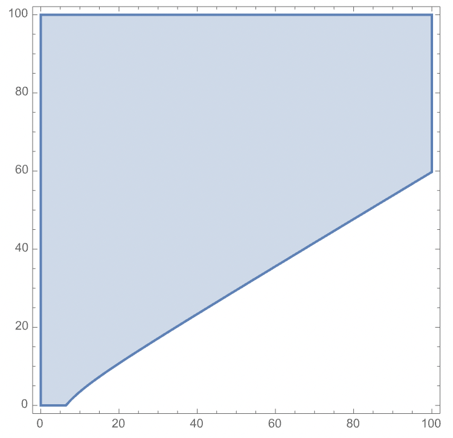
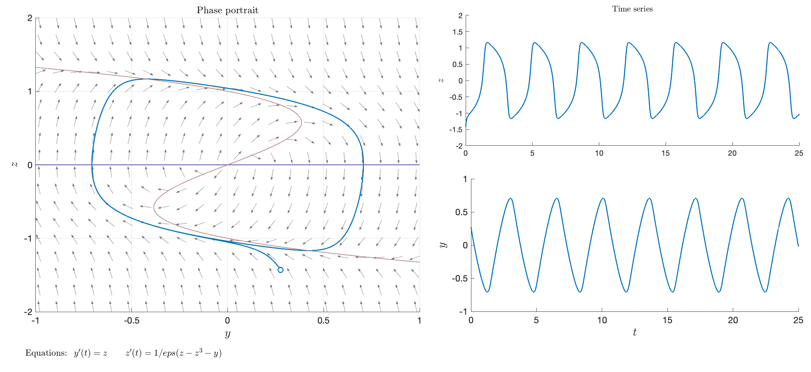
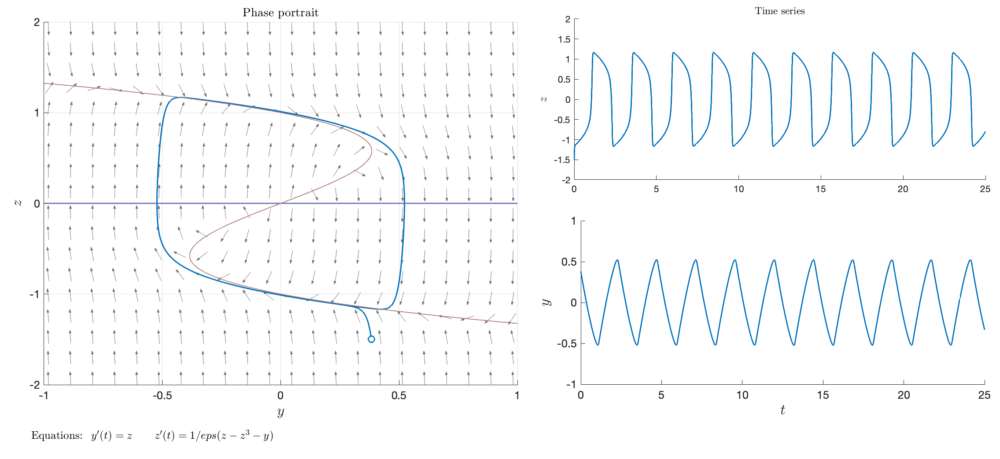
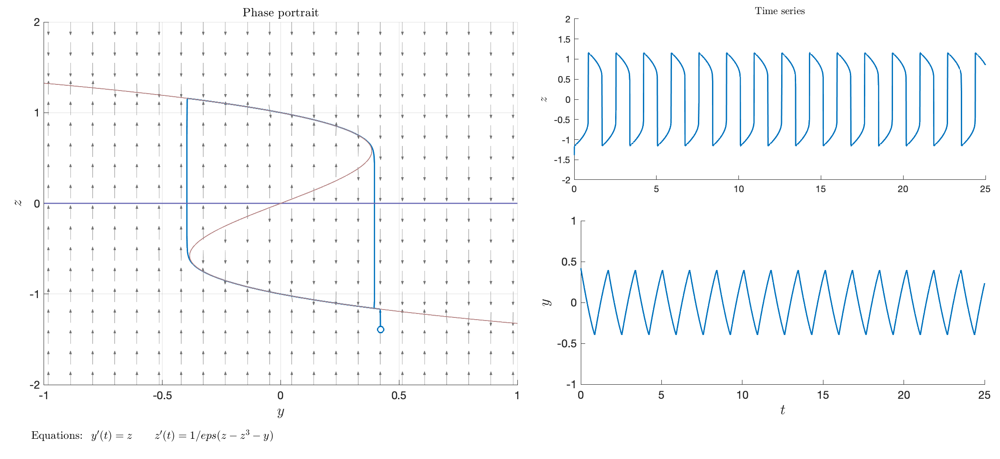

Reactions
Assignment 6
Oscillating reaction
Lengyel, Rabai, and Epstein (1990) have proposed and analyzed a particularly elegant model of an oscillating chemical reaction, the chlorine dioxide-iodine-malonic acid reaction. (You can check out on some YouTube videos of oscillating chematical reactions.)
After suitable non-dimensionalization, the model becomes \[ \left\{\begin{aligned} x' &= a - x - \frac{4xy}{1+x^2}, \\ y' &= bx - \frac{bxy}{1+x^2}, \end{aligned}\right. \]
where \(x=[\mathrm{I}^-]\) and \(y=[\mathrm{ClO}_2^-]\), and \(a\), \(b\) are positive parameters.
- Find the equilibrium of the system, and prove that it is never a saddle point.
The nullclines are \[ \begin{aligned} x'=0 &&\Rightarrow&& (a - x)(1+x^2) - 4xy &= 0, \\ y'=0 &&\Rightarrow&& bx(1+x^2-y) &= 0. \end{aligned} \]
We note that \(1+x^2 = y\) from the second equation, which gives: \[ x^*=\frac{a}{5}, \quad y^* = 1 + \frac{a^2}{25}. \]
For the stability, we check the Jacobian: \[ J = \begin{bmatrix} -1 + \frac{4y(x^2-1)}{(1+x^2)^2} & -\frac{4x}{1+x^2} \\ b + \frac{by(x^2-1)}{(1+x^2)^2} & -\frac{bx}{1+x^2} \end{bmatrix} \]
So at the equilibrium we have: \[ J^* = \frac{1}{25 + a^2}\begin{bmatrix} a^2 - 125 & -20a \\ 2a^2b & -5ab \end{bmatrix}. \]
An equilibrium is a saddle when 2 eigenvalues are of opposite sign. This can only happen when \(\det J^*<0\). But we have: \[ \det J^* = \frac{25ab}{25+a^2} > 0, \]
for \(a > 0\) and \(b>0\). Hence, the equilibrium is never a saddle.
- In the \((a,b)\) plane, find the region \(\mathcal{S}\) such that the equilibrium is asymptotically stable.
Since \(\det J^*>0\), the asymptotic stability of the equilibrium follows from the condition \(\operatorname{tr}J^*<0\). This is the case when: \[ \operatorname{tr}J^* = \frac{3a^2-5ab-125}{25+a^2} < 0. \]
Hence: \[ \mathcal{S} = \bigl\{ (a,b)\in\mathbb{R}_+^2\colon 3a^2 - 5ab - 125 < 0 \bigr\}. \]
To visualize the region, we can either solve the quadratic inequality in \(a\), or simply notice that \[ (a,b)\in\mathcal{S} \quad\Leftrightarrow\quad b > \frac{3}{5}a - \frac{25}{a}. \]

The region \(\mathcal{S}\) is above the curve \(b = \frac{3}{5}a - \frac{25}{a}\), which is zero for \(a = \frac{5}{3}\sqrt{15}\) and tends to a line of slope \(\frac{5}{3}b\) for \(a\to\infty\).
- Show that there exists a limit cycle for any choice of the parameters \((a,b)\) in the complement of \(\mathcal{S}\). Hint: apply the Poincaré-Bendixson theorem, by constructing an equilibrium-free region in the phase space that traps all the orbits.
In the complement of \(\mathcal{S}\) the equilibrium is unstable, because the trace is positive. Since there are no other equilibria, if we show that the trajectories are bounded in the \((x,y)\) plane, then there must exist at least one limit cycle. In other words, we apply the Poincaré-Bendixson in a trapping region \(\mathcal{R}\) where we removed a small neighborhood of the equilibrium.
A simple approach is to start with the axes. We will consider a rectangular region.
- Axis \(x=0\): \(x'=a>0\) and \(y'=0\), so the vector field points (horizontally) towards the positive side.
- Axis \(y=0\): \(y'=bx>0\), so the vector field always points towards \(y>0\).
- Axis \(x=a\): \(x'=-\frac{4xy}{1+a^2}<0\), so the vector field always points towards \(x<a\).
- Axis \(y=1+a^2\): \(y'=bx(1-\frac{1+a^2}{1+x^2})>0\), so the vector field always points towards \(y<1+a^2\) when \(x<a\).
The region \[ \mathcal{R} = \bigl\{ (x,y)\colon 0\le x \le a, 0 \le y \le 1+a^2, (x-x^*)^2 + (y-y^*)^2 \ge \varepsilon^2 \bigr\} \]
is a trapping region for the trajectories that contains no equilibria. Hence, there exists a limit cycle in \(\mathcal{R}\).
- What does it happen when we are on the boundary of \(\mathcal{S}\)? Hint: the eigenvalues of the linearized system are purely imaginary, thus the equilibrium is actually an infinitesimally small limit cycle.
First notice that the eigenvalues satisfy the equation \[ \lambda^2 - (\operatorname{tr}J^*)\lambda + \det J^* = 0. \]
The discriminant is \[ \Delta = (\operatorname{tr}J^*)^2 - 4\det J^*. \]
On the non-trivial boundary of the region we have \(\operatorname{tr}J^*=0\), hence the discriminant is negative: the eigenvalues are complex conjugate with zero real part. The trace of \(J^*\) is also (twice) the real part of the eigenvalues, and as we cross the boundary while leaving \(\mathcal{S}\) the real part from negative it becomes positive. Hence, the equilibrium becomes an unstable spiral. We notice that in \(\mathcal{S}\) we have a stable limit cycle, so trajectories go there.
- Find the period of the (infinitesimally small) limit cycle on the boundary as a function of \(a\). Show that as \(a\to\infty\), \(T\to\frac{2\pi}{\sqrt{15}}\). Hint: since eigenvalues are purely imaginary, locally the solution is of the form \(e^{i\omega t}\) for some \(\omega\). Use this fact to obtain the period.
On the boundary of \(\mathcal{S}\), the eigenvalues are imaginary: \[ \lambda_{1,2} = \pm i \sqrt{\det J^*}. \]
Similarly to a harmonic oscillator, the period is simply \(2\pi/\omega\), with \(\omega = \sqrt{\det J^*}\).
Since we are on the curve \(\operatorname{tr}{J}^*=0\), we have \(b = \frac{3}{5}a - \frac{25}{a}\) and hence: \[ \det J^* = \frac{25ab}{25+a^2} = \frac{15a^2-25^2}{25+a^2}\to 15, \]
when \(a\to\infty\). So the period tends to \(2\pi/\sqrt{15}\).
Fast-slow systems
Consider the following system of ODEs:
\[ \left\{\begin{aligned} y' &= z, \\ z' &= \frac{1}{\varepsilon}(z - z^3 - y). \end{aligned}\right. \]
with \(\varepsilon\ll 1\).
- Explain why the system has fast-slow dynamics, and identify the fast and the slow variable.
The variable \(z\) is fast, because its time derivative is very large, since \(\varepsilon \ll 1\).
By rescaling the time with \(\tau = t/\varepsilon\), we obtain the system: \[ \left\{\begin{aligned} \dot{y} &= \varepsilon z, \\ \dot{z} &= z - z^3 - y,\end{aligned}\right. \]
where we denoted with a dot the derivative with respect to \(\tau\). Thus, \(y\) is the slow variable, because on the fast scale \(\tau\) its derivative is almost zero.
- With the help of Tikhonov’s theorem, qualitatively study the dynamics of the system.
Since \(z\) is very fast, it can be assumed at quasi-steady-state compared to \(y\). In other words, we can go to the fast time-scale \(\tau\) and consider \(y\) as a parameter, since \(\dot{y}\approx 0\). We are left with a single equation for \(z\).
The equilibria are such that \(y = z-z^3\). We can have up to three solutions, depending on \(y\). (Remember, \(y\) is a parameter now.) With the help of a graph, denoting by \(y_M\) and \(y_m\) respectively the local maximum and minimum of the plot, we see that
- If \(y > y_M\) we have one negative solution, globally stable;
- If \(y < y_m\) we have one positive solution, globally stable;
- If \(y_m < y < y_M\) we have 3 solutions, the one in the middle unstable.
We can apply the Tikhonov’s theorem only when we can write \(z=\phi(y)\), which is not always possible here. We can only do for the upper and lower branch, respectively for \(y\in(-\infty,y_M)\) for the upper branch and for \(y\in(y_m,\infty)\) for the lower branch. The intermediate branch is unstable, so we cannot apply the theorem.
Now we can study the dynamics of the full system. Given an initial condition, say for convinience on the upper branch (if not, the fast dynamics would bring the system quickly to the stable manifold, either upper or lower branch), we follow the dynamics on the slow manifold. Here, the slow dynamics applies, that is \(y' = z = \phi(y)\). Since in the upper branch \(z > 0\), we have \(y'>0\), we follow the branch from left to the right, until the limit point at \(y=y_M\). After that, the theorem does not apply.
However, we can now go back to the fast system in the variable \(\tau\), and notice that we can keep \(y=y_M\) (or slightly larger) and notice that the new equilibrium is now on the lower branch, which is stable. Once there, we apply again the theorem. Since \(y'=z\) is now negative, we move to the left. We do until we reach the point \(y=y_m\), and then we must go to the positive branch again.
Concluding, the overall dynamics for \(\varepsilon\to 0\) is a (singular) limit cycle or hysteresis around the origin, running clockwise. We can check this in Matlab with PhasePlane app.



Notice that we are only changing the “speed” in the vertical direction. At the limit, the speed is infinite, and the solution in time is actually discontinuous.
Reversible reactions
In the derivation of Michaelis-Menten equation, it is assumed that the back-reaction is negligibly slow. Consider now the full system of reactions: \[ \ce{S + E <=>[$k_{-1}$][$k_1$] C <=>[$k_{-2}$][$k_2$] P + E}. \]
- Write down the system of equations corresponding to this scheme. Assume that at the start, there is neither complex \(C\) nor product \(P\).
We apply the law of mass action: \[ \begin{cases} [S]' = -k_1[S][E] + k_{-1}[C], & \\ [E]' = -k_1[S][E] + (k_{-1}+k_2)[C] - k_{-2}[P][E], & \\ [C]' = k_1[S][E] - (k_{-1}+k_2)[C] + k_{-2}[P][E], & \\ [P]' = k_2[C] - k_{-2}[P][E]. & \end{cases} \]
The initial conditions are: \([S](0)=s_0\), \([E](0)=e_0\), \([C](0)=0\), and \([P](0)=0\).
- Note that two quantities are conserved: \([E] + [C]\) and \([S] + [C] + [P]\). Use this to decrease the number of equations.
Simply note that: \[ \begin{aligned}{} [E]' + [C]' = 0, &\quad\Rightarrow\quad [E] + [C] = e_0, \\ [S]' + [C]' + [P]' = 0, &\quad\Rightarrow\quad [S] + [C] + [P] = s_0. \end{aligned} \]
We can remove 2 equation, by using \[ \begin{cases} [E] = e_0 - [C], \\ [P] = s_0 - [S] - [C]. \end{cases} \]
We obtain: \[ \begin{cases} [S]' = -k_1[S](e_0 - [C]) + k_{-1}[C], & \\ [C]' = k_1[S](e_0 - [C]) - (k_{-1}+k_2)[C] + k_{-2}(s_0 - [S] - [C])(e_0 - [C]). & \end{cases} \]
- Make the equations non-dimensional, and in so doing introduce the parameter \(\varepsilon = \frac{e_0}{s_0}\), the ratio of initial values of enzyme and substrate.
We have \([S] = s_0 s\), \([C] = e_0 c\), \(\varepsilon = \frac{e_0}{s_0}\) and \(\tau = k_1 e_0 t\): \[ \left\{\begin{aligned} \frac{\mathrm{d}s}{\mathrm{d}\tau} &= -s(1 - c) + \frac{k_{-1}}{k_1 s_0} c, \\ \varepsilon \frac{\mathrm{d}c}{\mathrm{d}\tau} &= s(1 - c) - \frac{k_{-1}+k_2}{k_1 s_0} c + \frac{k_{-2}}{k_1} (1 - s - \varepsilon c)(1 - c). \end{aligned}\right. \]
- Go to the limit \(\varepsilon \to 0^+\) which amounts to make the quasi-steady-state approximation.
We formally set \(\varepsilon = 0\), and get: \[ s(1 - c) - \frac{k_{-1}+k_2}{k_1 s_0} c + \frac{k_{-2}}{k_1} (1 - s)(1 - c) = 0. \]
We solve for \(c\): \[ c = \frac{k_{-2} + (k_1 - k_{-2}) s}{\frac{k_2 + k_{-1}}{s_0} + k_{-2} + (k_1 - k_{-2}) s}. \]
We need to check that the equilibrium curve \(c=c(s)\) is stable. The derivative (with respect to \(c\)) of the nullcline \(c'=0\) is: \[ -\frac{k_{-2}(1-s)}{k_1} - s - \frac{k_2 + k_{-1}}{k_1 s_0} < 0, \]
which is negative because \(s\in[0,1]\) and all parameters are positive. Thus, the branch of equilibria \(c=c(s)\) is asymptotically stable.
- Consider the resulting differential equation for \(S(t)\) and show that it will converge to an equilibrium \(S_*\) where the concentrations of substrate and product will satisfy Haldane’s relationship: \[ \frac{P_*}{S_*} = \frac{k_1k_2}{k_{-1}k_{-2}}. \]
Rewrite the system in the \(([S],[P])\) coordinates: \[ \begin{cases} [S]' = -k_1[S][E] + k_{-1}[C], & \\ [P]' = k_2[C] - k_{-2}[P][E]. & \end{cases} \]
Now observe that at equilibrium \([S]'=0\) and \([P]'=0\). There is no need to solve the system: \[ \begin{cases} 0 = -k_1 S_* E_* + k_{-1}C_*, & \\ 0 = k_2 C_* - k_{-2}P_* E_*. & \end{cases} \]
From the first equation we deduce that: \[ C_* = \frac{k_1}{k_{-1}} S_* E_*. \]
From the second equation we have: \[ 0 = k_2 \frac{k_1}{k_{-1}} S_* E_* - k_{-2}P_* E_* \quad\Rightarrow\quad \frac{P_*}{S_*} = \frac{k_1k_2}{k_{-1}k_{-2}}. \]
Phosphorylation
Assume that an enzyme \(E\) can bind to a substrate molecule \(S\) allowing it to become phosphorylated, \(S_p\), as in the following scheme: \[ \ce{S + E <=>[$k_1$][$k_{-1}$] C_1 ->[$k_2$] S_p + E} \]
A different enzyme \(F\) can bind to the phosphorylated molecule \(S_p\) allowing it to be dephosphorylated, according to the scheme: \[ \ce{S_p + F <=>[$k_3$][$k_{-3}$] C_2 ->[$k_4$] S + F} \]
- Write down the system of equations corresponding to this scheme. Assume that at the start, there are no complexes \(C_1\) or \(C_2\).
According to the law of mass action: \[ \begin{cases} [S]' = -k_1[S][E] + k_{-1}[C_1] + k_4 [C_2], & \\ [E]' = -k_1[S][E] + (k_{-1}+k_2)[C_1], & \\ [C_1]' = k_1[S][E] - (k_{-1}+k_2)[C_1], & \\ [S_p]' = k_2 [C_1] + k_{-3}[C_2] - k_3[S_p][F], & \\ [F]' = -k_3[S_p][F] + (k_{-3}+k_4)[C_2], & \\ [C_2]' = k_3[S_p][F] - (k_{-3}+k_4)[C_2]. & \\ \end{cases} \]
The initial conditions are: \([S](0)=s_0\), \([E](0)=e_0\), \([C_1](0)=[C_2](0)=0\), \([S_p](0)=p_0\), and \([F](0)=f_0\).
- Prove that two quantities are conserved: \([E] + [C_1]\) and \([F] + [C_2]\). Use this to decrease the number of equations.
Note that: \[ \begin{aligned}{} [E]' + [C_1]' = 0, &\quad\Rightarrow\quad [E] + [C_1] = e_0, \\ [F]' + [C_2]' = 0, &\quad\Rightarrow\quad [F] + [C_2] = f_0.\end{aligned} \]
- Following the same approach used in the derivation of Michaelis-Menten equation, arrive at a single equation for the (appropriately scaled) variable \([S]\).
We can remove the equations for \([E]\) and \([F]\): \[ \begin{cases} [S]' = -k_1[S](e_0-[C_1]) + k_{-1}[C_1] + k_4 [C_2], & \\ [C_1]' = k_1[S](e_0-[C_1]) - (k_{-1}+k_2)[C_1], & \\ [S_p]' = k_2 [C_1] + k_{-3}[C_2] - k_3[S_p](f_0-[C_2]), & \\ [C_2]' = k_3[S_p](f_0-[C_2]) - (k_{-3}+k_4)[C_2]. & \\ \end{cases} \]
The equations for \([S]\) and \([S_p]\), when considered independently, fully matches the derivation of the Michaelis-Menten law. Note that there is an additional conserved quantity: \[ [S]'+[C_1]'+[S_p]'+[C_2]' = 0 \quad\Rightarrow\quad [S](0)+[S_p](0)=s_0+p_0=s_\mathrm{tot}. \]
Thus, it is convenient to rescale with respect to \(s_\mathrm{tot}\). Rescale the variables with \[ \begin{aligned}{} [S](t) &= s_\mathrm{tot} s(t),& [S_p](t) &= s_\mathrm{tot} p(t), & \\ [C_1](t) &= e_0 c_1(t), & [C_2](t) &= f_0 c_2(t), & \tau &= k_1 e_0 t. \end{aligned} \]
We plug the above expression in the system to obtain \[ \left\{\begin{aligned} s' &= -s (1-c_1) + \frac{k_{-1}}{s_\mathrm{tot} k_1} c_1 + \frac{k_4 f_0}{k_1 s_\mathrm{tot} e_0} c_2, \\ \varepsilon c_1' &= s(1-c_1) - \frac{k_{-1}+k_2}{k_1 s_\mathrm{tot}} c_1, \\ p' &= - \frac{k_3 f_0}{k_1 e_0} p (1 - c_2) + \frac{k_2}{k_1 s_\mathrm{tot}} c_1 + \frac{k_{-3} f_0}{k_1 e_0 s_\mathrm{tot}} c_2, \\ \varepsilon c_2' &= \frac{k_3}{k_1} p (1-c_2) - \frac{(k_{-3}+k_4)}{k_1 s_\mathrm{tot}} c_2. \end{aligned}\right. \]
where \(\varepsilon = e_0/s_\mathrm{tot} \ll 1\) and \(f_0/s_\mathrm{tot} \ll 1\). So the slow variables are \([S]\) and \([S_p]\), while \([C_1]\) and \([C_2]\) are fast. The quasi-steady-state approximation we get with \(\varepsilon = 0\): \[ \left\{\begin{aligned} 0 &= s(1-c_1) - \frac{k_{-1}+k_2}{k_1 s_\mathrm{tot}} c_1, \\ 0 &= \frac{k_3}{k_1} p (1-c_2) - \frac{(k_{-3}+k_4)}{k_1 s_\mathrm{tot}} c_2. \end{aligned}\right. \]
We can solve with respect to \(c_1\) and \(c_2\): \[ \begin{aligned} c_1 &= \frac{s}{\frac{k_{-1}+k_2}{k_1 s_\mathrm{tot}} + s} = \frac{s}{K_s + s}, \\ c_2 &= \frac{p}{\frac{k_{-3}+k_4}{k_3 s_\mathrm{tot}} + p} = \frac{p}{K_p + p}. \end{aligned} \]
In the original variables we have: \[ \begin{aligned}{} [C_1] &= \frac{e_0[S]}{\frac{k_{-1}+k_2}{k_1} + [S]}, \\ [C_2] &= \frac{f_0[S_p]}{\frac{k_{-3}+k_4}{k_3} + [S_p]}, \end{aligned} \]
which is exactly the Michaelis-Menten law.
To arrive at a single equation for \(s\), we use the above expression for \(c_1=c_1(s)\) and \(c_2=c_2(p)\). We can express \(p\) from the above conservation law to obtain: \[ s_\mathrm{tot} p = s_\mathrm{tot} - e_0 c_1 - f_0 c_2 - s_\mathrm{tot} s, \]
or, in other words: \[ p = 1 - \varepsilon c_1 - \varepsilon\frac{f_0}{e_0} c_2 - s, \]
therefore we can assume, on the slow scale, that \(p=1-s\). We find the equation: \[ s' = -\frac{K_s s}{K_s + s} + \frac{k_{-1}}{k_1 s_\mathrm{tot}}\frac{s}{K_s + s} + \frac{k_4 f_0}{k_1 s_\mathrm{tot} e_0}\frac{1-s}{K_p + 1-s}. \]
Chain of reactions
(Similar to Keener and Sneyd (2009), Exercise 1.5)
Consider an enzymatic reaction in which an enzyme \(E\) can be activated or inactivated by the same chemical substance \(A\), as follows \[ \begin{aligned} \ce{E + A &<=>[$k_1$][$k_{-1}$] E_1 } \\ \ce{E_1 + A &<=>[$k_2$][$k_{-2}$] E_2 } \\ \ce{S + E_1 &->[k_3] P + E } \\ \end{aligned} \]
Assume that the initial concentration of \(E\) is \(e_0 \ll a_0\), where \(a_0\) is the initial concentration of \(A\). Further assume that \(E_1\), \(E_2\), and \(P\) are not present at \(t = 0\).
- Write down the system of equations corresponding to this scheme.
According to the law of mass action the system reads: \[ \begin{cases} [E]' = -k_1[E][A] + k_{-1}[E_1] + k_3[S][E_1], & \\ [A]' = -k_1[E][A] + k_{-1}[E_1] - k_2[E_1][A] + k_{-2}[E_2], & \\ [E_1]' = k_1[E][A] - k_{-1}[E_1] - k_2[E_1][A] + k_{-2}[E_2] - k_3 [S][E_1], & \\ [E_2]' = k_2 [E_1][A] - k_{-2}[E_2], & \\ [S]' = -k_3[E_1][S], & \\ [P]' = k_3[E_1][S]. & \end{cases} \]
As for the initial concentrations, we have \([E](0)=e_0\), \([A](0)=a_0\), \([S](0)=s_0\), \([P](0)=[E_1](0)=[E_2](0)=0\).
- After having identified quantities that are conserved, rescale the variables with the initial concentrations of \(E\) or \(A\). Using the assumption \(e_0 \ll a_0\) (while the values of all rates are comparable), show that the equations result in a slow-fast system.
First notice that \([S]' + [P]' = 0\), so we can remove the equation for \([P]\). Similarly, we have \[ [E]'+[E_1]'+[E_2]'=0,\quad\Rightarrow\quad [E] = e_0-[E_1]-[E_2]. \]
By removing the equation for \([E]\), the system reduces to 4 equations. There is no need to further reduce the system, even though it would be possible to find additional conservation laws. Instead, we directly rescale the system assuming: \[ [A](t) = a_0 x(t),\quad [E_1](t)=e_0 y(t),\quad [E_2](t)=e_0 z(t),\quad [S](t)=s_0 s(t),\quad \tau = k_1 e_0 t. \]
Note that the rescaling is exactly as done in the derivation of Michaelis-Menten law. After substitution we obtain: \[ \left\{\begin{aligned} x' &= - x(1-y-z) + \frac{k_{-1}}{k_1 a_0} y - \frac{k_2}{k_1} xy + \frac{k_{-2}}{k_1 a_0} z, \\ \frac{e_0}{a_0} y' &= x(1-y-z) - \frac{k_{-1}}{k_1 a_0} y - \frac{k_2}{k_1} xy + \frac{k_{-2}}{k_1 a_0} z - \frac{k_3 s_0}{k_1 a_0} s y, \\ \frac{e_0}{a_0} z' &= \frac{k_2}{k_1} xy - \frac{k_{-2}}{k_1 a_0} z, \\ s' &= -\frac{k_3}{k_1} y s, \end{aligned}\right. \]
There are a few parameters, but we know from the assumptions that \(y(t)\) and \(z(t)\) are the fast variables, whereas \(s(t)\) and \(x(t)\) are the slow variables.
- Using the quasi-steady-state analysis, show that \(x = [A]/a_0\) satisfies an equation of the type: \[ x' = − \frac{\beta x s}{1 + \alpha x + \delta s + \gamma x^2}. \]
Following the quasi-steady-state approximation, we get: \[ \left\{\begin{aligned} 0 &= x(1-y-z) - \frac{k_{-1}}{k_1 a_0} y - \frac{k_2}{k_1} xy + \frac{k_{-2}}{k_1 a_0} z - \frac{k_3 s_0}{k_1 a_0} s y, \\ 0 &= \frac{k_2}{k_1} xy - \frac{k_{-2}}{k_1 a_0} z. \end{aligned}\right. \]
We can work on additional “symmetries”. Notice that most of the terms defining the slow manifold (the sytem above), also appear in the equation for the slow variable \(x'\). In particular we have: \[ x(1-y-z) - \frac{k_{-1}}{k_1 a_0} y = \frac{k_3 s_0}{k_1 a_0} s y. \]
We plug this and the equation \(z'=0\) in the equation for \(x'\) and obtain: \[ x' = \frac{k_3 s_0}{k_1 a_0} s y. \]
To find \(y\) and \(z\) we solve the (linear) system above. We first solve for \(z\): \[ z = \frac{k_2 a_0}{k_{-2}} xy, \]
then we replace \(z\) in the first equation and solve for \(y\), \[ y = - \frac{a_0 k_1 x}{k_{-1}k_{-2} + k_3 k_{-2} s_0 s + a_0 k_1 x (k_{-2}+a_0 k_2 x)}, \]
and finally we plug this expression in the above equation for \(x'\): \[ x' = - \frac{k_3 s_0}{k_{-1}k_{-2}} \frac{x s}{1 + \frac{k_3}{k_{-1}} s_0 s + a_0 \frac{k_1}{k_{-1}} x + a_0^2 \frac{k_1 k_2}{k_{-1}k_{-2}} x^2}, \]
which corresponds to the sought expression.